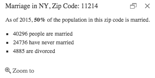
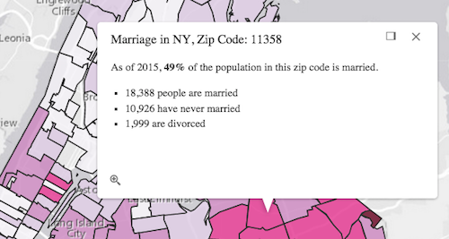

Get started with PopupTemplate
Popups provide an easy way for users to access data attributes from layers and graphics. They enhance the interactivity of custom applications by allowing users to click on features in the map to view content specific to the selected feature.
Each view has a popup associated with it. In most cases, the content of the popup is set with a template specific to your data. The template is defined using PopupTemplate. The PopupTemplate may be set on individual graphics or on layers. When a feature inside a layer is selected by the user, the view's popup sets its content based on the PopupTemplate assigned to the layer.
In the most basic scenarios, you won't need to modify the properties of the view's popup. Rather, the majority of popup customization may be handled with the PopupTemplate.
This sample will walk you through how to use the PopupTemplate in a FeatureLayer. The principles mentioned here may similarly be applied to other layer types, such as ImageryLayer.
Prior to completing the following steps, you should be familiar with views, Map, and FeatureLayer. If necessary, complete the following tutorials first:
- Get started with MapView
- Get started with SceneView
- Get started with Layers
- Review the basic FeatureLayer sample
In addition to the steps provided below, you can also set the PopupTemplate.content via a text type element directly within the content. For more information and an example, please see its API reference and a sample showing how to display multiple popupTemplate elements.
1. Create a FeatureLayer and add it to a map
Create a FeatureLayer using this service that depicts various statistics for zip codes in New York. Next, add it to a basic Map and then set the Map instance to a View. Your JavaScript should look similar to what is shown below:
require([
"esri/Map",
"esri/views/MapView",
"esri/layers/FeatureLayer",
"dojo/domReady!"
], function(
Map,
MapView,
FeatureLayer
) {
// Create a FeatureLayer
var featureLayer = new FeatureLayer({
url: "https://services.arcgis.com/V6ZHFr6zdgNZuVG0/ArcGIS/rest/services/NYCDemographics1/FeatureServer/0",
outFields: ["*"]
});
// Create the Map and add the featureLayer defined above
map = new Map({
basemap: "gray",
layers: [featureLayer]
});
// Create the MapView
var view = new MapView({
container: "viewDiv",
map: map,
center: [-73.950, 40.702],
zoom: 11
});
});
2. Create a PopupTemplate object and add a title
The PopupTemplate allows you to show feature attributes, or data specific to the selected feature (such as region name, population, state code, etc.), inside both the title and content properties of the popup. Attributes are referenced in the following syntax: {AttributeName}.
The PopupTemplate has a title property that will display at the top of the popup. Since this layer's renderer depicts marriage rates by zip code, we will add a title related to marriage with the zip code number of the selected geography.
var template = {
// ZIP is the name of a field in the service containing the zip code number of the feature
title: "Marriage in NY, Zip Code: {ZIP}"
};
Since a PopupTemplate may be autocast you don't need to require the esri/PopupTemplate module. Simply create a simple object containing the same properties as those specified in the PopupTemplate documentation and set it on the popupTemplate property of the layer.
3. Add content to the PopupTemplate
The PopupTemplate's content property provides a template defining the content of the popup for each selected feature. In this application, we want to add a simple statement with a bulleted list of marriage statistics related to the selected feature. Basic HTML tags are supported in the content property.
Add the following to the content of the template:
var template = {
title: "Marriage in NY, Zip Code: {ZIP}",
// Four fields are used in this template. The value of the selected feature will be
// inserted in the location of each field name below
content: "<p>As of 2015, <b>{MARRIEDRATE}%</b> of the population in this zip code is married.</p>" +
"<ul><li>{MARRIED_CY} people are married</li>" +
"<li>{NEVMARR_CY} have never married</li>" +
"<li>{DIVORCD_CY} are divorced</li><ul>"
};
Other content types may be added other than straight text. You can also add images, charts, tables, attachments, and any combination of the above to a popup. See the Multiple popup elements sample for an example of this.
The popup should look like the following:

That's pretty good, but formatting the values will help the content look cleaner.
4. Use fieldInfos to format field values
The fieldInfos property of PopupTemplate allows you to format number and date fields. In this case, we want to use a comma separator for values larger than 1,000 and round to the nearest whole number in case any decimal values are provided.
See the code below on how this is accomplished:
var template = {
fieldInfos: [{
fieldName: "MARRIED_CY", // The field whose values you want to format
format: {
digitSeparator: true, // Uses a comma separator in numbers >999
places: 0 // Sets the number of decimal places to 0 and rounds up
}
}, {
fieldName: "NEVMARR_CY", // The field whose values you want to format
format: {
digitSeparator: true, // Uses a comma separator in numbers >999
places: 0 // Sets the number of decimal places to 0 and rounds up
}
}, {
fieldName: "DIVORCD_CY", // The field whose values you want to format
format: {
digitSeparator: true, // Uses a comma separator in numbers >999
places: 0 // Sets the number of decimal places to 0 and rounds up
}
}]
};
5. Set the PopupTemplate on the layer
Set the template on the layer's popupTemplate property. This can be handled in the FeatureLayer's constructor or directly on the layer instance prior to adding it to the map.
featureLayer.popupTemplate = template;
The snippet above indicates that the popup should show on the view. In addition, a defined template is set on this popup instance.
The remaining steps will walk you through setting the content of the template inside the PopupTemplate's constructor. This is normally handled prior to setting the template on the layer.
Now the popup content should look formatted in the following manner:

Click the Explore in the sandbox button above to view this full sample alongside its code.
Sample search results
| Title | Sample |
|---|
There were no match results from your search criteria.